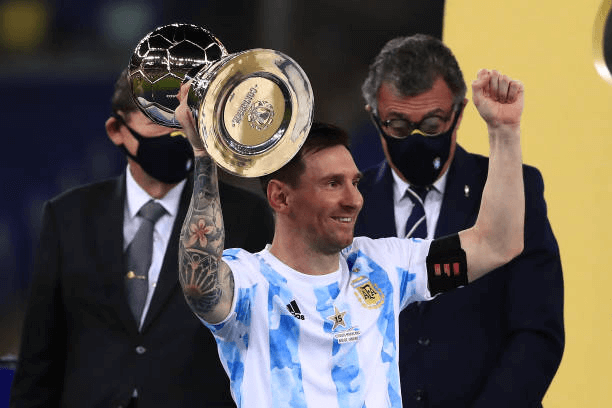
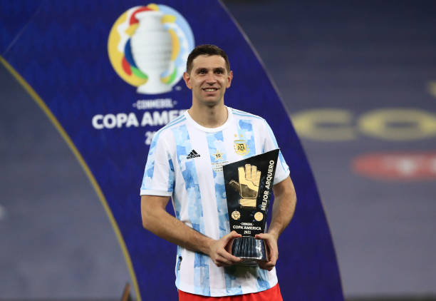
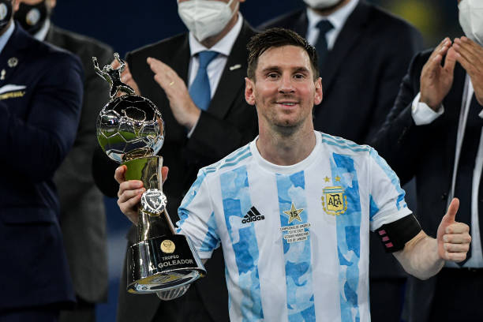

Conmebol
Copa America
2021


Neymar Jr
Neymar da Silva Santos Junior born 5 February 1992, known as Neymar, is a Brazilian professional footballer who plays as a forward for Ligue 1 club Paris Saint-Germain and the Brazil national team. He is widely regarded as one of the best players in the world.

Lionel Messi
Luis Lionel Andrés Messi also known as Leo Messi,born 24 June 1987 is an Argentine professional footballer who plays as a forward or an attacking midfielder and captains the Argentina national team and FC Barcelona.

Cristiano Ronaldo
Cristiano Ronaldo dos Santos Aveiro born 5 February 1985, is a Portuguese professional footballer who plays as a forward for Serie A club Juventus and captains the Portugal national team.

Paulo Dybala
Paulo Exequiel Dybala born 15 November 1993, is an Argentine professional footballer who plays as a forward for Serie A club Juventus and the Argentina national team.

Mesut Özil
Mesut Özil born 15 October 1988,is a German professional footballer who plays as an attacking midfielder for Süper Lig club Fenerbahçe. Nicknamed "The Assist King", Özil is known for his technical skills, creativity, agility, and finesse.He has also played as a wide midfielder in his career.

Mauro Icardi
Mauro Emanuel Icardi born 19 February 1993, is an Argentine professional footballer who plays as a striker for Ligue 1 club Paris Saint-Germain and the Argentina national team.

Angel Di Maria
Angel Fabian Di Maria(born 14 February 1988,is an Argentine professional footballer who plays for Ligue 1 club Paris Saint-Germain and the Argentina national team. He can play as either a winger or attacking midfielder.

Kylian Mbappe
Kylian Mbappe Lottin born 20 December 1998, is a French professional footballer who plays as a forward for Ligue 1 club Paris Saint-Germain and the France national team.

Mohamed Salah
Mohamed Salah Hamed Mahrous Ghaly born 15 June 1992, is an Egyptian professional footballer who plays as a forward for Premier League club Liverpool and captains the Egypt national team. Considered one of the best players in the world, he is known for his finishing, dribbling, and speed.

Harry Kane
Harry Edward Kane born 28 July 1993, is an English professional footballer who plays as a striker for Premier League club Tottenham Hotspur and captains the England national team. Regarded as one of the best strikers in the world, Kane is known for his prolific goalscoring record and ability to link play.

Kevin De Bruyne
Kevin De Bruyne born 28 June 1991,is a Belgian professional footballer who plays as a midfielder for Premier League club Manchester City, where he is vice-captain, and the Belgium national team.

Philippe Coutinho
Philippe Coutinho Correia born 12 June 1992, is a Brazilian professional footballer who plays as an attacking midfielder or winger for Spanish club Barcelona and the Brazil national team. He is known for his combination of vision, passing, dribbling and ability to conjure curving long-range strikes.
All Highlights
Copa America 2021
Copa America 2021 is over, and Argentina is the queen of South America after 28 years, with Messi finally winning his first international title. It was a long journey with 4 group matches and three knock-out matches.

Copa America 2021 Winner
Argentina
Copa America 2021 List of Individual Awards
Copa America Golden Ball
Lionel Messi(Argentina)
Copa America Golden Glove
Emiliano Martinez (Argentina)
Copa America Golden Boot
Lionel Messi(Argentina)